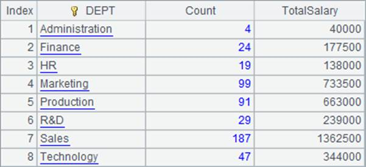
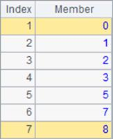
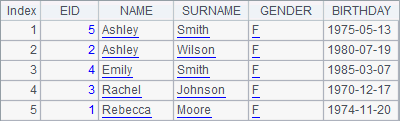

9.2 JSON data
JSON is a common data-interchange format. JSON data may come from an external Java program, a local file or the HTTP server. esProc can easily parse the JSON strings and compute them.
The following examples will show in detail how to write an esProc script for doing this.
In the first case, the JSON string is transferred from an external Java program through a parameter.
Suppose there is a JSON string of employee information that includes the following fields – EID, NAME, SURNAME, GENDER, STATE, BIRTHDAY, HIREDATE and DEPT. Now parse the string and find out the female employees born after January 1, 1981 inclusive. The string is as follows:
[{EID:1,NAME:"Rebecca",SURNAME:"Moore",GENDER:"F",STATE:"California ",BIRTHDAY:1974-11-20,HIREDATE:2005-03-11,DEPT:"R&D",SALARY:7000},
{EID:2,NAME:"Ashley",SURNAME:"Wilson",GENDER:"F",STATE:"New York",BIRTHDAY:1980-07-19,HIREDATE:2008-03-16,DEPT:"Finance",SALARY:11000},
{EID:3,NAME:"Rachel",SURNAME:"Johnson",GENDER:"F",STATE:"New Mexico",BIRTHDAY:1970-12-17,HIREDATE:2010-12-01,DEPT:"Sales",SALARY:9000},¡]
Solution: Call the esProc script in the Java program and meanwhile input the JSON string; esProc parses and filters the JSON data and then returns the result in the form of JSON string to the Java program.
To select female employees born after January 1, 1975 inclusive, esProc script inputs two parameters – ¡°jsonstr¡± and ¡°where¡± – from the external program, as shown below:

¡°where¡± is a string, its value is BIRTHDAY>=date(1975,1,1) && GENDER=="F".
Note: Parameter jsonstr is a string, its entered value needs to be preceded by a single quote.
Here¡¯s the esProc script for doing this task:
|
|
A |
|
|
1 |
=json(jsonstr) |
 |
|
2 |
=A1.select(${where}) |
|
|
3 |
=json(A2) |
[{"EID":2,"NAME":"Ashley","SURNAME":"Wilson","GENDER":"F","STATE":"New York","BIRTHDAY":"1980-07-19","HIREDATE":"2008-03-16","DEPT":"Finance","SALARY":11000}¡] |
|
4 |
return A3 |
|
A1: Parse the JSON data into a table sequence. The result can be displayed in esProc¡¯s Integrated Development Environment (IDE), as shown in the right part of the figure above.
A2: Filter the data of the table sequence. A macro is used to dynamically parse the expression, in which ¡°where¡± is the input parameter. esProc will compute the expression in ${¡} to get the macro string value and, replace ${¡} with it, and then interpret and execute the generated expression. The final code for execution is =A1.select(BIRTHDAY>=date(1975,1,1) && GENDER=="F").
A3: Export the data of the filtered table sequence in the form of a JSON string.
A4: Return the desired result set to the external program.
Refer to related Tutorial sections for the method of calling an esProc script in Java program.
Another case is that JSON data comes from HTTP server. Suppose a JSON string of employee information is returned with a testServlet. Retrieve and process the data as follows:
|
|
A |
|
|
1 |
=httpfile("http://localhost:6080/myweb/servlet/testServlet?table=employee&type=json") |
|
|
2 |
=A1.read() |
|
|
3 |
=A2.import@j() |
|
|
4 |
=A3.select(${where}) |
|
|
5 |
=json(A4) |
|
|
6 |
return A5 |
|
A1: Define an httpfile object, the URL is
http://localhost:6080/myweb/servlet/testServlet?table=employee&type=json.
A2: Read the result returned by the httpfile object.
A3: Parse the JSON string and generate a table sequence.
A4: Filter the data according to the specified condition.
A5: Convert the filtered table sequence to a JSON string.
A6: Return the result of A5 to the Java program invoking the esProc script.
esProc can also parse and compute the JSON data including nested object. For example, the nested comments in the blog. esProc an parse them into fields which can be referenced. Below is the blogs.json file:
[
{ "id" : 1000,
"content" : "It is too hot",
"comment" :
[
{
"author" : "joe",
"score" : 3,
"comment" : "just so so!"
},
{
"author" : "jimmy",
"score" : 5, "comment" : "cool! good!"
}
]
},
{ "id" : 1001,
"content" : "It is too cold",
"comment" :
[
{
"author" : "james",
"score" : 1,
"comment" : "yes!" },
{
"author": "jimmy",
"score" : 5,
"comment" : "cool!"
}
]
},
{ "id" : 1002,
"content" : "It is windy day today",
"comment" :
[
{
"author" : "tom",
"score" : 3,
"comment" : "I do not thinkso!"
},
{
"author" : "jimmy",
"score" : 5,
"comment" : "cool!"
}
]
}
]
Use the esProc editor to write a script for importing data from the JSON file, parsing and computing it:
|
|
A |
|
|
1 |
=file("D:/files/work/txt/blogs.json").read().import@j() |
|
Get the resulting table sequence and you can see that comment field is a field referencing table sequences, as shown below:
Double-click the blue value in the first row to see the referenced table sequence in detail:

esProc can further perform more complicated set operations based on this table sequence with a referencing field.